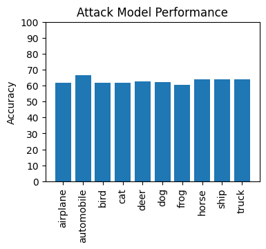

Bit flipping laboratory & Personal website
No sneaky cookies haunt these pages, but whether someone tracks you I do not know. Information flows through many channels, and every action leaves a trace.
The ideas and methods described in this article come from the paper Membership Inference Attacks Against Machine Learning Models. Unable to find original source code from the authors, I attempt to reproduce a small portion of their results using pytorch. To maintain focus, I only include parts of the source code that help explain and clarify the experiment. For complete source code, see the Jupyter notebook on which this article is based.
Imagine a machine learning model trained on some dataset, which we'll call the victim model. In a membership inference attack, an adversary predicts whether or not the victim model's training set included a particular item. The usual scenario grants the adversary
A dataset similar in distribution to the model's training data. For instance, the adversary may have relevant personal information for a handful of survey respondents or a collection of images. A reasonable assumption, because the adversary must have access to some data to even ask the question about its inclusion in the training set.
The architecture of the victim model. A reasonable assumption if the victim generates their model using a cloud service, and the adversary uses the same cloud service to generate their own models as discussed later. The authors show the attack is still viable without knowledge of the model architecture, although less so.
The ability to query the victim model and see the confidence vector it produces. Another reasonable assumption, if the victim allows access to their model online via an API.
As the experimenter, I control all the CIFAR10 data. My role is to simulate the membership inference attack. The victim and the adversary each get a portion of the data. The authors note that the adversary does not technically need its own dataset, but the alternative approaches become quite expensive, computationally speaking. I also reserve a third portion of the data as a test set, external to the scenario, so I can measure the efficacy of the CIFAR10 models the victim and adversary will train.
def split_cifar_dataset(victim_frac: float) -> Tuple[Dataset, Dataset, Dataset]:
tr = Compose([
ToTensor(),
Normalize((0.5, 0.5, 0.5), (0.5, 0.5, 0.5))
])
train_set = CIFAR10(DATA_PATH, train=True, download=True, transform=tr)
test_set = CIFAR10(DATA_PATH, train=False, download=True, transform=tr)
victim_size = int(victim_frac * len(train_set))
splits = [victim_size, len(train_set) - victim_size]
victim_set, adversary_set = random_split(train_set, splits)
return victim_set, adversary_set, test_setThe smaller the victim's dataset, the better the attack works. In fact, I could not make the attack work unless the victim's portion of the available data was unrealistically small; so just in the interest of making the attack work, the victim gets only 20% of the training data and the adversary gets the remaining 80%.
The CIFAR10 dataset contains examples of 10 image types. The victim trains a classifier with 10 outputs. I mirrored the model architecture described by the authors as closely as I could, but differences might exist where there were omissions or parts I was unclear on.
As described later, the adversary will create shadow models that have this exact same architecture.
def cifar_model() -> Module:
return Sequential(
Conv2d(3, 16, kernel_size=3, padding=1),
Tanh(),
MaxPool2d(kernel_size=2, stride=2),
Conv2d(16, 16, kernel_size=3),
Tanh(),
MaxPool2d(kernel_size=2, stride=2),
Flatten(),
Linear(784, N_CLASSES),
Tanh(),
Softmax(dim=1))I don't include the actual training loop because it is mostly boilerplate. The only thing to note is that the number of epochs is unrealistically high, as the authors note that the membership inference attack works best when the victim model is overfit. Here is a function that converts a Dataset into two tensors representing the features and labels. Note this approach only works for datasets that are small enough to comfortably fit into memory.
def dataset_to_tensors(dataset: Dataset) -> List[Tensor]:
loader = DataLoader(dataset, batch_size=len(dataset))
return next(iter(loader))The amount of computation required for these experiments though is certainly enough to warrant using a GPU: even though the dataset is relatively small, a lot of models need to be trained (in fact overtrained for best results).
def run_on_gpu(model: Module, features: Tensor) -> Tensor:
model = model.to(device)
features = features.to(device)
output = model(features)
del model, features
torch.cuda.empty_cache()
return output.cpu()The adversary uses its portion of the CIFAR10 data to create shadow models. The general idea is for these models to mimic the victim model as closely as possible. Ideally they should have the same or a similar architecture to the victim model, if the adversary knows the architecture of the victim model. Or if the victim used an online service to create its model, the adversary could use the same service in hopes that the service will choose the same architecture it did for the victim.
The key difference between the victim and shadow models is that the adversary knows what data it used to train the shadow models, a fact it will use in the next step to actually carry out the attack. In my experiment I use the same architecture as for the victim model.
The adversary should train multiple shadow models. The more shadow models, the better representation the adversary will have about how an arbitrary CIFAR10 model (such as the victim model) might behave generally. The shadow models should be trained on different subsets of the adversary's data. Overlap is okay. The authors didn't go into too much detail about their strategy here, so I had to guess. The disjoint_subsets function creates makes a random subset of size determined by frac of the adversary's data for training a shadow model, and another disjoint subset of equal size, so that the adversary has a dataset a shadow model was trained on, and a dataset it was not trained on.
def disjoint_subsets(dataset: Dataset, frac: float) -> Tuple[Dataset, Dataset]:
dataset_size = len(dataset)
subset_size = int(dataset_size * frac)
indexes = np.random.choice(dataset_size, 2 * subset_size, replace=False)
midpoint = len(indexes) // 2
train_set = Subset(dataset, indexes[:midpoint])
test_set = Subset(dataset, indexes[midpoint:])
return train_set, test_setI generate training data for the attack model by feeding the adversary's portion of its CIFAR10 data through its shadow models. I generate testing data for the attack model by feeding the CIFAR10 testing data through the victim model. In both cases the process is the same, and the resulting dataset consists of confidence vectors. Each element of the confidence vector is a feature. The label is 1 if the model was trained on the CIFAR10 data, and 0 if it was not.
def attack_data(model: Module, dataset: Dataset, label: int) -> Dataset:
confidences = []
with torch.no_grad():
for batch in DataLoader(dataset, batch_size=64):
images, _ = batch[0], batch[1]
confidences.append(run_on_gpu(model, images))
_, cifar_labels = dataset_to_tensors(dataset)
attack_labels = torch.full([len(dataset)], label)
confidences = torch.cat(confidences)
return TensorDataset(confidences, cifar_labels, attack_labels)For generating attack model training data, the adversary uses the attack_data process twice for every shadow model it has: once with the CIFAR10 data on which the shadow model was trained, and once with a subset of the CIFAR10 data of equal size on which the shadow model was not trained.
def balanced_attack_data(model: Module, train_set: Dataset, test_set: Dataset) -> Dataset:
train_attack = attack_data(model, train_set, 1)
test_attack = attack_data(model, test_set, 0)
return ConcatDataset([train_attack, test_attack])With all those building blocks in place, here is the process of creating the adversary's training set for its attack model. The number of shadow models to use, and the fraction of the adversary's CIFAR10 data to use to train each shadow model are parameters the adversary can adjust.
def shadow_attack_data(n_shadows: int, dataset: Dataset, frac: float) -> Dataset:
attack_datasets = []
for _ in range(n_shadows):
train_set, test_set = disjoint_subsets(dataset, frac)
model = train_cifar_model(train_set)
attack_datasets.append(balanced_attack_data(model, train_set, test_set))
return ConcatDataset(attack_datasets)The adversary trains not just a single membership inference model, but rather one membership inference model for each label that the victim model can produce. These membership inference models are binary classifiers, specializing in predicting whether a CIFAR10 image with a particular label was used to train the victim model.
The paper did not elaborate on the architecture the authors used for these membership inference models, so I had to make what I thought were reasonable choices: a single hidden layer, ReLU, and Sigmoid which seems reasonable enough for binary classification.
def attack_model() -> Module:
return Sequential(
Linear(10, 128),
ReLU(),
Linear(128, 128),
ReLU(),
Linear(128, 1),
Sigmoid())Because the adversary in fact has 10 membership inference models to train, each one on a different CIFAR10 label, it has to partition its CIFAR10 data by label. Then it uses those partitions as its training sets.
def filter_by_cifar_label(dataset: Dataset, label: int) -> Dataset:
confidences, cifar_labels, attack_labels = dataset_to_tensors(dataset)
filtered_confidences = confidences[cifar_labels == label]
filtered_attack_labels = attack_labels[cifar_labels == label]
return TensorDataset(filtered_confidences, filtered_attack_labels)
def train_attack_models(n_labels: int, dataset: Dataset) -> List[Module]:
models = []
for label in range(n_labels):
filtered_dataset = filter_by_cifar_label(dataset, label)
model = train_attack_model(filtered_dataset)
models.append(model)
return modelsThe functions defined so far make running the experiment fairly straightforward. To recap, we split the CIFAR10 dataset into three parts: one that belongs to the victim for training the victim model, one for the adversary to prepare its shadow models, and one for our purposes as experimenters to test the performances of all the CIFAR10 models. The victim trains the victim model. The adversary trains its shadow models. The adversary generates an attack dataset using its shadow models. And finally, the adversary trains its membership inference models from the attack dataset, one for each CIFAR10 label.
victim_set, adversary_set, test_set = split_cifar_dataset(VICTIM_TRAIN_FRAC) victim_model = train_cifar_model(victim_set) complete_attack_train_set = shadow_attack_data(N_SHADOW_MODELS, adversary_set, SHADOW_TRAIN_FRAC) attack_models = train_attack_models(N_CLASSES, complete_attack_train_set)
Next we can evaluate the attack models. We feed the victim model a lot of data that it has been trained on and an equal amount of data it hasn't been trained on, in order to generate a dataset with the same features the attack dataset had. With multiple attack models this is a little more complicated, because we have to partition the test set by label and feed each partition through the attack model that was trained to handle that particular label.
def victim_attack_data(model: Module, train_set: Dataset, test_set: Dataset) -> Dataset:
indexes = np.random.choice(len(train_set), len(test_set), replace=False)
train_subset = Subset(train_set, indexes)
return balanced_attack_data(model, train_subset, test_set)
attack_test_set = victim_attack_data(victim_model, victim_set, test_set)
labels = list(range(N_CLASSES))
accuracies = []
for label in labels:
filtered_dataset = filter_by_cifar_label(attack_test_set, label)
model = attack_models[label]
accuracies.append(evaluate_attack(model, filtered_dataset))As an experimenter, I don't care too much about testing the attack model on a dataset other than what I get from the victim model. As an attacker, I might care though: I won't know if my membership inference predictions against the victim model are right, and I might want to know when I deploy my attack model against the victim, how likely it is that they are. In other words, I think without additional testing that the adversary is a little blind in the end to how well its attack models actually work, and therefore how much trust to put in what they say.
In any case, we can see how well the attack did for each of the ten labels.
label_words = CIFAR10(DATA_PATH, download=True).classes
plt.figure(figsize=(4, 3))
plt.bar(label_words, accuracies)
plt.ylabel('Accuracy')
plt.yticks(np.arange(0, 101, 10))
plt.title('Attack Model Performance')
plt.xticks(labels, rotation=90)
plt.savefig(
f'{OUT_PATH}/attack-model-performance.png',
bbox_inches='tight',
pad_inches=0.1,
transparent=True)
plt.show()I wondered if there would be larger differences between the labels, because the authors suggested there might be notably different accuracies; but the attack seems about equally effective against all the labels.
